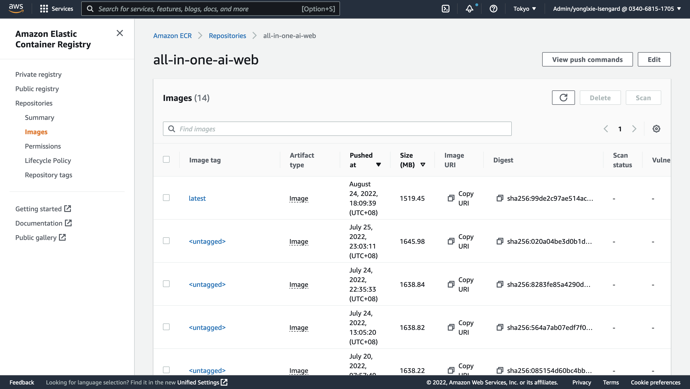

Builder Guide
Fully update
- Delete CloudFormation stack from all-in-one-ai main stack
- Delete the asserts uploaded to S3 URI.
- tart a fresh deployment
- Please refer to quick deployment section in all-in-one-ai-deployment-guide.
Partial update
CloudFormation update
-
Upload updated CloudFormation templates to S3 via executing the following command where project_dir is the path of all-in-one-ai source and s3uri is the S3 URI where the assets were uploaded to.
aws s3 cp ${project_dir}/deployment/templates ${s3uri}/templates --recursive -
Update CloudFormation stack from all-in-one-ai main stack in CloudFormation console or update CloudFormation nested stack only when you are very familiar with the whole structure of all-in-one-ai and changes between the existed and new one.
-
If the CloudFormation stack changes can’t be detected by CloudFormation automatically, you have to replace the source manually. Otherwise, you have to perform fully update.
Backend source update
- Upload updated backend source in ZIP format to S3 via executing the following command where project_dir is the path of all-in-one-ai source and s3uri is the S3 URI where the assets were uploaded to. [Optional] aws s3 cp ${project_dir}/backend/build/codes ${s3uri}/codes --recursive
- Go to AWS Lambda console and upload a new revision of Lambda source code in ZIP format.
Web source update
-
Build web docker image and push to AWS ECR with following command where project_dir is the path of all-in-one-ai source and region is the AWS region where you launched your web server in AWS ECS.
cd ${project_dir}/web ./build_and_push.sh ${region} -
Go to AWS ECR console to confirm if the new ECR revision is pushed.

Add a new algorithm – Common
Machine learning frameworks supported
- Apache MXNET
- HuggingFace
- PyTorch
- TensorFlow
Machine learning frameworks not supported yet while planned in the near future
- Chainer
- Reinforcement Learning
- Scikit-learn
- SparkML Serving
- XGBoost
Machine learning frameworks not covered above
- You may need to use BYOC
-
You may need to build BYOS with supported machine learning frameworks. For example, PaddleOCR uses PaddlePaddle as the underling machine learning framework which is not supported in SageMaker Python SDK. We could reuse a supported machine learning framework.
- PaddleOCR training – TensorFlow
- PaddleOCR inference – PyTorch.
Add a new algorithm – BYOS
SageMaker
- Add a fold under sagemaker
- Create your scripts for train and inference
Backend
-
Revise backend/src/all_in_one_ai_train/lambda_function.py and add an entry for new algorithm training and choose corresponding machine learning framework.
if(algorithm == 'yolov5'): default_hyperparameters = { 'data': '/opt/ml/input/data/cfg/data.yaml', 'cfg': 'yolov5s.yaml', 'weight': 'yolov5s.pt', 'project': '/opt/ml/model/', 'name': 'tutorial', 'img': 640, 'batch': 16, 'epochs': 100, 'device': 0 } for key in default_hyperparameters.keys(): if(key not in hyperparameters.keys()): hyperparameters[key] = default_hyperparameters[key] git_config = {'repo': 'https://github.com/ultralytics/yolov5.git', 'branch': 'master'} payload = { 'body': { 'job_name': job_name, 'algorithm': algorithm, 'industrial_model': industrial_model, 'entry_point': 'train.py', 'source_dir': '.', 'git_config': git_config, 'role': role_arn, 'instance_type': instance_type, 'instance_count': instance_count, 'hyperparameters': hyperparameters, 'inputs': inputs, 'py_version': 'py38', 'framework_version': '1.10.2' } } response = lambda_client.invoke( FunctionName = 'all_in_one_ai_create_train_pytorch', InvocationType = 'Event', Payload=json.dumps(payload) ) -
Revise backend/src/all_in_one_ai_deploy/lambda_function.py and add an entry for new algorithm training and choose corresponding machine learning framework.
if(algorithm == 'yolov5'): source_dir = ssmh.get_parameter('/all_in_one_ai/config/meta/algorithms/{0}/source'.format(algorithm)) payload = { 'body': { 'industrial_model': industrial_model, 'role': role_arn, 'entry_point': 'inference.py', 'source_dir': source_dir, 'py_version': 'py38', 'framework_version': '1.10.2', 'model_name': model_name, 'model_data': model_data_url, 'model_environment': model_environment, 'endpoint_name': endpoint_name, 'instance_type': instance_type, 'instance_count': instance_count, } } response = lambda_client.invoke( FunctionName = 'all_in_one_ai_create_deploy_pytorch', InvocationType = 'Event', Payload = json.dumps(payload) ) -
Revise backend/src/all_in_one_ai_create_pipeline/lambda_function.py and add an entry for new algorithm training and choose corresponding machine learning framework.
if(script_mode): if(model_algorithm == 'yolov5'): default_hyperparameters = { 'data': '/opt/ml/input/data/cfg/data.yaml', 'cfg': 'yolov5s.yaml', 'weight': 'yolov5s.pt', 'project': '/opt/ml/model/', 'name': 'tutorial', 'img': 640, 'batch': 16, 'epochs': 10 } training_job_hyperparameters = training_job_hyperparameters for key in default_hyperparameters.keys(): if(key not in training_job_hyperparameters.keys()): training_job_hyperparameters[key] = default_hyperparameters[key] git_config = {'repo': 'https://github.com/ultralytics/yolov5.git', 'branch': 'master'} entry_point = 'train.py' source_dir = '.' framework_version = '1.10.2' py_version = 'py38' estimator = PyTorch( entry_point = entry_point, source_dir = source_dir, git_config = git_config, role = role, hyperparameters = training_job_hyperparameters, framework_version = framework_version, py_version = py_version, instance_type = training_job_instance_type, instance_count = training_job_instance_count )
Web
- Create a tsx file under web/src/components/Form/Demo/Single for demostration of new algorithm.
-
Revise web/src/components/Data/data.ts to add a new entry in ALGORITHMS.
export const ALGORITHMS = [ {label: 'Yolov5', value: 'yolov5', reference: 'https://github.com/ultralytics/yolov5/blob/master/README.md', type: 'single', trainable: true}, {label: 'GluonCV', value:'gluoncv', reference: 'https://github.com/dmlc/gluon-cv/blob/master/README.md', type: 'single', trainable: true}, {label: 'GluonTS', value:'gluonts', reference: 'https://github.com/awslabs/gluonts/blob/dev/README.md', type: 'single', trainable: true}, {label: 'PaddleOCR', value: 'paddleocr', reference: 'https://github.com/PaddlePaddle/PaddleOCR/blob/release/2.6/README.md',type: 'single', trainable: true}, {label: 'CPT', value: 'cpt', reference:'https://github.com/fastnlp/CPT/blob/master/README.md', type: 'single', trainable: true}, {label: 'GABSA', value: 'gabsa', reference: 'https://github.com/IsakZhang/Generative-ABSA/blob/main/readme.md', type: 'single', trainable: true}, {label: 'PaddleNLP', value: 'paddlenlp', reference: 'https://github.com/PaddlePaddle/PaddleNLP/blob/develop/README_en.md', type: 'single', trainable: true}, {label: 'mDeBERTa', value: 'mdeberta', reference: 'https://github.com/microsoft/DeBERTa/blob/master/README.md', type: 'single', trainable: false}, {label: 'KeyBERT', value: 'keybert', reference: 'https://github.com/MaartenGr/KeyBERT/blob/master/README.md', type: 'single', trainable: false}, {label: 'Yolov5PaddleOCR', value: 'yolov5paddleocr', type: 'mixed'} ] -
Revise web/src/components/Data/data.ts to add a new entry in TRAININGINPUTDATA.
export const TRAININGINPUTDATA = { 'yolov5': [ { key: 'images', value: '' }, { key: 'labels', value: '' }, { key: 'cfg', value: '' }, { key: 'weights', value: '' } ], 'gluoncv': [ { key: 'train', value: '' }, { key: 'val', value: '' }, { key: 'test', value: '' } ], 'cpt': [ { key: 'dataset', value: '' } ], 'gabsa': [ { key: 'dataset', value: '' } ], 'paddlenlp': [ { key: 'dataset', value: '' } ], 'paddleocr': [ { key: 'dataset', value: '' }, { key: 'pretrained_models', value: '' } ], 'gluonts': [ { key: 'dataset', value: '' } ] }
Deployment
- Revise deployment/templates/all-in-one-ai-ssm.yaml to add 3 new entries
Parameter15: Type: AWS::SSM::Parameter Properties: Name: /all_in_one_ai/config/meta/algorithms/yolov5/industrialmodels Type: String Value: !Sub s3://${S3Bucket}/${S3Key}algorithms/yolov5/industrialmodels/ Parameter16: Type: AWS::SSM::Parameter Properties: Name: /all_in_one_ai/config/meta/algorithms/yolov5/source Type: String Value: !Sub s3://${S3Bucket}/${S3Key}algorithms/yolov5/source/sourcedir.tar.gz Parameter17: Type: AWS::SSM::Parameter Properties: Name: /all_in_one_ai/config/meta/algorithms/yolov5/artifact Type: String Value: !Sub s3://${S3Bucket}/${S3Key}algorithms/yolov5/artifact/model.tar.gz
Add a new algorithm – BYOC
SageMaker
- Add a fold under sagemaker
-
Create your Dockerfile
ARG BASE_IMG=pytorch/pytorch:1.8.1-cuda11.1-cudnn8-devel FROM ${BASE_IMG} ENV PATH="/opt/ml/code:${PATH}" RUN rm /etc/apt/sources.list.d/cuda.list RUN rm /etc/apt/sources.list.d/nvidia-ml.list RUN apt-get update \ && apt-get install -y --no-install-recommends --allow-unauthenticated \ jq RUN ldconfig -v RUN pip install tensorboard torch torchvision --upgrade RUN apt-get install -y git RUN cd /opt && git clone https://github.com/ultralytics/yolov5 RUN pip install -r /opt/yolov5/requirements.txt RUN apt-get install ffmpeg libsm6 libxext6 -y ### Install nginx notebook RUN apt-get install -y --no-install-recommends \ wget \ nginx \ ca-certificates \ && rm -rf /var/lib/apt/lists/* # forward request and error logs to docker log collector RUN ln -sf /dev/stdout /var/log/nginx/access.log RUN ln -sf /dev/stderr /var/log/nginx/error.log RUN pip install flask gevent gunicorn boto3 ENV PATH="/opt/yolov5:${PATH}" WORKDIR /opt/ml/code COPY train /opt/ml/code COPY predict /opt/ml/code COPY serve /opt/ml/code COPY wsgi.py /opt/ml/code COPY predictor.py /opt/ml/code COPY nginx.conf /opt/ml/code -
Create your build_and_push.sh and change the image default name
#!/bin/bash set -v set -e # This script shows how to build the Docker image and push it to ECR to be ready for use # by SageMaker. # The argument to this script is the image name. This will be used as the image on the local # machine and combined with the account and region to form the repository name for ECR. if [ "$#" -ne 1 ]; then echo "usage: $0 [region-name]" exit 1 fi image="all-in-one-ai-yolov5" # Get the account number associated with the current IAM credentials account=$(aws sts get-caller-identity --query Account --output text) # Get the region defined in the current configuration region=$1 if [[ $region =~ ^cn.* ]] then fullname="${account}.dkr.ecr.${region}.amazonaws.com.cn/${image}:latest" aws_endpoint="amazonaws.com.cn" else fullname="${account}.dkr.ecr.${region}.amazonaws.com/${image}:latest" aws_endpoint="amazonaws.com" fi echo ${fullname} # If the repository doesn't exist in ECR, create it. aws ecr describe-repositories --repository-names "${image}" --region ${region} || aws ecr create-repository --repository-name "${image}" --region ${region} if [ $? -ne 0 ] then aws ecr create-repository --repository-name "${image}" --region ${region} fi aws ecr get-login-password --region ${region} | docker login --username AWS --password-stdin ${account}.dkr.ecr.${region}.${aws_endpoint} aws ecr set-repository-policy \ --repository-name "${image}" \ --policy-text "file://ecr-policy.json" \ --region ${region} # Build the docker image, tag with full name and then push it to ECR docker build -t ${image} -f Dockerfile . docker tag ${image} ${fullname} docker push ${fullname}
Backend
-
Please refer to backend/src/all_in_one_ai_training_job/lambda_function.py. No changes needed as long as the default training_image was put in SSM parameter store.
if(training_image == ''): try: training_image = ssmh.get_parameter('/all_in_one_ai/config/meta/algorithms/{0}/training_image'.format(algorithm)) except Exception as e: print(e) -
Please refer to backend/src/all_in_one_ai_model/lambda_function. No changes needed as long as the default infernece_image and artifact was put in SSM parameter store.
if(training_image == ''): try: training_image = ssmh.get_parameter('/all_in_one_ai/config/meta/algorithms/{0}/training_image'.format(algorithm)) except Exception as e: rint(e) if(model_data_url == ''): try: model_data_url = ssmh.get_parameter('/all_in_one_ai/config/meta/algorithms/{0}/artifact'.format(algorithm)) except Exception as e: print(e)default model_data_url is only valid for the model which doesn’t need to download the model data.
-
Please refer to backend/src/all_in_one_ai_create_pipeline/lambda_function.py No changes needed as long as the default training_image and inference_image and artifact were put in SSM parameter store.
try: training_image = ssmh.get_parameter('/all_in_one_ai/config/meta/algorithms/{0}/training_image'.format(algorithm)) except Exception as e: print(e) if(inference_image == ''): try: inference_image = ssmh.get_parameter('/all_in_one_ai/config/meta/algorithms/{0}/inference_image'.format(algorithm)) except Exception as e: print(e) if(model_data_url == ''): try: model_data_url = ssmh.get_parameter('/all_in_one_ai/config/meta/algorithms/{0}/artifact'.format(algorithm)) except Exception as e: print(e)Note: default model_data_url is only valid for the model which doesn’t need to download the model data.
Web
- Same as BYOS. Please refer to add a new algorithm BYOS – web.
Deployment
-
It will be done automatically as long as it is put under sagemaker subdirectory with Dockerfile and build_and_push.sh
dirlist=$(find ${project_dir}/sagemaker -mindepth 1 -maxdepth 1 -type d) for subdir in $dirlist do if [ -f "./build_and_push.sh" ]; then ./build_and_push.sh ${region} touch dummy tar czvf model.tar.gz dummy aws s3 cp model.tar.gz ${s3uri}/algorithms/${algorithm}/artifact/ rm dummy rm model.tar.gz else cd ${subdir} array=($(echo ${subdir} | tr "/" "\n")) size=${#array[@]} index=$((size - 1)) algorithm=${array[$index]} touch dummy tar czvf model.tar.gz dummy aws s3 cp model.tar.gz ${s3uri}/algorithms/${algorithm}/artifact/ rm dummy rm model.tar.gz tar czvf sourcedir.tar.gz * aws s3 cp sourcedir.tar.gz ${s3uri}/algorithms/${algorithm}/source/ rm sourcedir.tar.gz fi done -
Revise deployment/templates/all-in-one-ai-ssm.yaml to add new entries for your default training image and inference image
Parameter40: Type: AWS::SSM::Parameter Properties: Name: /all_in_one_ai/config/meta/algorithms/yolov7/training_image Type: String Value: 034068151705.dkr.ecr.ap-northeast-1.amazonaws.com/all-in-one-ai-yolov7:latest Parameter41: Type: AWS::SSM::Parameter Properties: Name: /all_in_one_ai/config/meta/algorithms/yolov7/inference_image Type: String Value: 034068151705.dkr.ecr.ap-northeast-1.amazonaws.com/all-in-one-ai-yolov7:latest